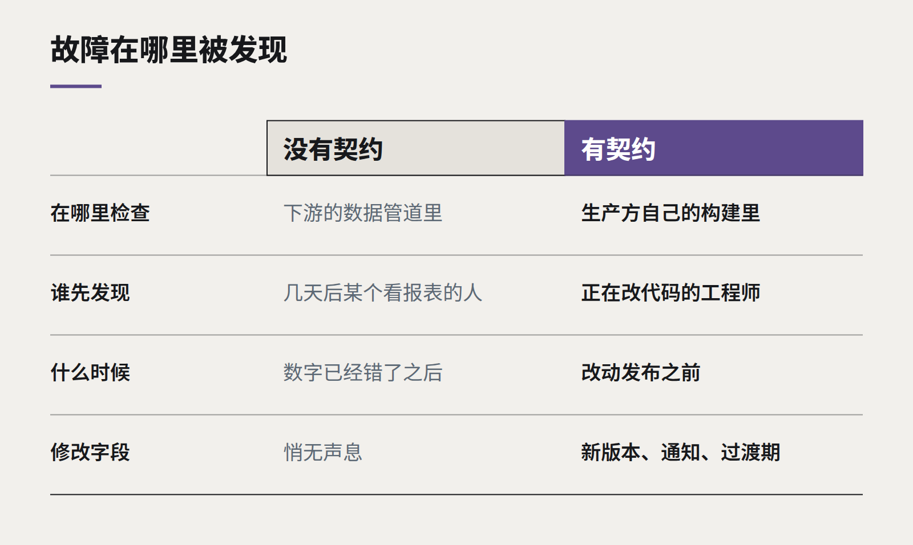

洞察
数据
数据契约：别再在下游修管道
大多数坏掉的报表，都是在上游被一个没人通知的改动弄坏的。数据契约让数据的生产者为数据的形态负责——并让故障大声地暴露出来，而不是悄无声息。

每个数据团队都熟悉周一早上的那条消息：营收看板不对。有人沿着管道一路往回查，发现周五时某个应用团队改了一个字段名，把状态值从 closed 改成了 complete，或者开始用分而不是元来传金额。没有任何报错，数据照常流动，只是错了。
这是企业数据中最常见的故障，而它几乎从来不是数据团队的失误，而是“约定”的缺失。生产数据的人在不知道谁依赖它的情况下改了它，消费数据的人则在数字看起来不对劲之前无从知晓。
数据契约是什么
数据契约，是一个系统向其他系统提供的数据集，关于其形态和含义的一份明确的、带版本的约定。它通常包括：
- 结构。 有哪些字段、各是什么类型、哪些必填。
- 语义。 每个字段用文字说明它的含义。状态可以取哪些值。金额是否含 GST。时间戳是哪个时区。
- 质量规则。 数据必须通过的检查：客户 ID 不能为空、合计必须对得上、日期不能在未来。
- 新鲜度。 数据多久到一次，晚到什么程度算太晚。
- 归属。 负责这个数据集的团队，以及如何联系他们。
契约和生产系统的代码一起放在版本控制里。它不是维基上的一篇文档，而是构建流程会检查的东西。

把检查移到上游
关键的变化在于检查发生在哪里。没有契约时，校验位于远在下游的数据管道里，在损害已经造成之后才失败——如果它还会失败的话。有了契约，生产团队自己的构建会验证即将发布的数据是否仍然符合契约。一个破坏性改动，会让他们自己的合并请求失败，而不是让别人的看板出错。
这并不意味着生产者永远不能改数据，而是意味着改动是有意识的。新增字段没问题；重命名或删除字段，则需要一个新版本的契约、通知消费者，以及一段新旧两个版本同时可用的过渡期。
从哪里开始
契约不需要一次覆盖所有东西。行之有效的做法是：
- 挑出三四个支撑管理层真正在看的报表的数据集。
- 让生产团队在场，为每一个数据集写契约。关于“这个字段到底是什么意思”的讨论，常常是最有价值的部分——它经常揭示出两个团队在用同一个词指代不同的东西。
- 先在生产方加自动检查，再在消费方加一道作为第二防线。
- 等某个数据集真的出了故障，再把契约扩展到它，而不是提前铺开。
它会带来什么
直接的好处是坏掉的报表变少了。更大的好处是信任。当管理者知道眼前的数字来自有明确负责人、定义被强制执行的数据集时，他们就不再要求“再给我一份表格核对一下”。从那一刻起，数据才开始改变决策，而不只是装点决策。
继续阅读
全部洞察